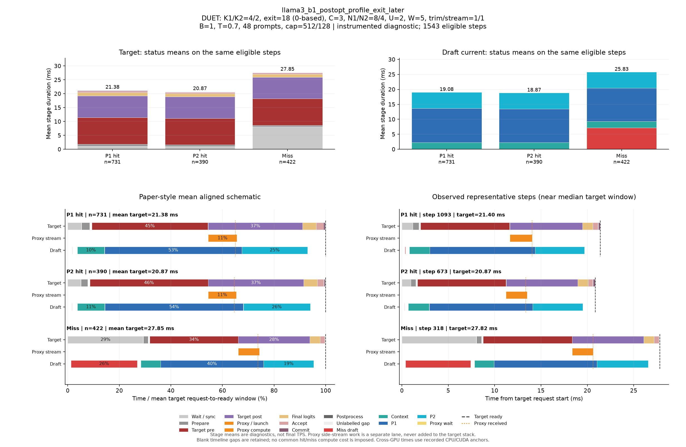

DUET: K1/K2=4/2, exit=18 (0-based), C=3, N1/N2=8/4, U=2, W=5, trim/stream=1/1
| Pass | 용도 | N | B | T | Seed | AL* | Cache hit | TPS* | Raw TPS |
|---|---|---|---|---|---|---|---|---|---|
| 0 | profile-diagnostic | 48 | 1 | 0.7 | 6800 | 2.761 | 72.51% | 102.03 | 101.60 |
Input/output cap: 512/128 · GPUs: 4,5 · draft seed: 0 · source: 641f5ce88ead693790ced9a3261b01241c94e8f4
PNG · 벡터 PDF · 원본 결과 JSON
세부 trace: 1543 eligible steps. Target 원본 · Draft 원본
제외 수: {"initial": 19, "output_boundary": 46, "capture_or_next": 11}
왼쪽 아래는 상태별 평균 정렬 schematic, 오른쪽 아래는 실제 대표 step입니다. %의 분모는 각 상태의 평균 target request→ready 시간이며 phase overlap은 별도 lane에 표시합니다.

{
"args": {
"target": "/data/chokwans99/models/layerskip-llama3-8B",
"draft": "/home/chokwans99/models_mlsys/Qwama-0.5B-Instruct",
"mode": "duet-tree",
"batches": [
1
],
"temperatures": [
0.7
],
"seeds": [
6800
],
"target_tp": 1,
"prompts": "/home/chokwans99/PSD-mlsys-coverage/results/mlsys_coverage/round5/tuning48.json",
"limit": 0,
"max_new_tokens": 128,
"max_model_len": 2048,
"input_cap": 512,
"k1": 4,
"k2": 2,
"draft_fan_out": 2,
"proxy_fan_out": 1,
"p1_tree": true,
"p1_verify_nodes": null,
"p2_verify_nodes": null,
"exit_layer": 18,
"p1_nodes": 8,
"p2_nodes": 4,
"tree_width": 3,
"p1_roots": 2,
"p2_budget": null,
"tree_root_count": null,
"tree_beta": 0.5,
"tree_proxy_threshold": 0.01,
"tree_conf_threshold": 0.03,
"root_source": "complement",
"root_normalization": "full",
"root_overlap_mix": 0.25,
"memory_fraction": 0.45,
"ignore_eos": false,
"greedy_only": false,
"audit_preemption": false,
"ragged_limits": false,
"tree_calibration_dir": null,
"preflight_test": null,
"output": "/home/chokwans99/PSD-mlsys-coverage/results/mlsys_coverage/round5/llama3_postopt_l0_profile/llama3_b1_postopt_profile_exit_later.json"
},
"engine_kwargs": {
"num_gpus": 2,
"max_num_seqs": 1,
"max_model_len": 2048,
"max_num_batched_tokens": 2048,
"gpu_memory_utilization": 0.45,
"speculate": true,
"draft_async": true,
"greedy_only": false,
"jit_speculate": true,
"speculate_k": 6,
"async_fan_out": 3,
"duet_p1_tree_policy": "on",
"duet_p2_tree_policy": "on",
"draft": "/home/chokwans99/models_mlsys/Qwama-0.5B-Instruct",
"duet_enabled": true,
"duet_exit_layer": 18,
"duet_phase1_k": 4,
"duet_phase2_k": 2,
"duet_draft_fan_out": 2,
"duet_p2_tree_max_nodes": 4,
"duet_p2_tree_verify_nodes": 4,
"duet_p1_tree_max_nodes": 8,
"duet_p1_tree_verify_nodes": 8,
"duet_tree_c_tensor": 3,
"duet_p1_roots_per_position": 2,
"duet_p2_budget": null,
"duet_tree_root_count": null,
"duet_tree_beta": 0.5,
"duet_tree_proxy_threshold": 0.01,
"duet_tree_conf_threshold": 0.03,
"duet_root_source": "complement",
"duet_root_normalization": "full",
"duet_root_overlap_mix": 0.25
},
"env": {
"CUDA_VISIBLE_DEVICES": "4,5",
"SSD_CUDA_ARCH": "8.9",
"SSD_ATTN_BACKEND": "auto",
"SSD_DIST_PORT": "33603",
"OMP_NUM_THREADS": "4",
"SSD_SEED": "0",
"SSD_CHAIN_PROXY_GRAPH": "1",
"SSD_FAST_VERIFY": "1",
"SSD_BATCHED_PROXY_GRAPH": "1",
"SSD_DUET_EXIT_REPLICA": "0",
"SSD_ASYNC_PROXY_SEND": "1",
"SSD_PROXY_STREAM": "0",
"SSD_BATCHED_TREE": "1",
"SSD_TREE_EXPANSION_POLICY": "reach_gain_frontier",
"SSD_TREE_REACH_CALIBRATION": "/home/chokwans99/PSD-mlsys-coverage/results/mlsys_coverage/round4/calibration/reach.json",
"SSD_TREE_GAIN_CALIBRATION": "/home/chokwans99/PSD-mlsys-coverage/results/mlsys_coverage/round4/calibration/gain.json",
"SSD_DUET_MISS_K": "4",
"SSD_TREE_FUSED_MATH": "1",
"SSD_BATCH_TREE_BULK_EXPORT": "1",
"SSD_TREE_PARALLEL_INSERT": "0",
"SSD_PROFILE_DUET": "1",
"SSD_PROFILE_DUET_MAX_EVENTS": "100000",
"SSD_TREE_SHAPE_METRICS": "1",
"SSD_PROFILE_DIR": "/home/chokwans99/PSD-mlsys-coverage/results/mlsys_coverage/round5/profiles/llama3_b1_postopt_profile_exit_later",
"SSD_HF_CACHE": "/data/chokwans99/models",
"SSD_DATASET_DIR": "/home/chokwans99/PSD-mlsys-coverage/results/mlsys_coverage/round5",
"SSD_TREE_LADDER_TRIM": "1",
"SSD_BATCH_TREE_PROXY_STREAM": "1",
"SSD_PROFILE_DUET_DETAIL": "1"
},
"effective_features": {
"fast_verify": true,
"batched_proxy_graph": true,
"exit_replica": false,
"jit_speculate": true,
"duet_jit_short": true,
"miss_depth": 4,
"miss_width": 1,
"tree_fused_math": true,
"tree_parallel_insert": false,
"bulk_export": true
},
"resolved_env": {
"SSD_CUDA_ARCH": "8.9",
"SSD_ATTN_BACKEND": "auto",
"SSD_DIST_PORT": "33603",
"SSD_SEED": "0",
"SSD_CHAIN_PROXY_GRAPH": "1",
"SSD_FAST_VERIFY": "1",
"SSD_BATCHED_PROXY_GRAPH": "1",
"SSD_DUET_EXIT_REPLICA": "0",
"SSD_ASYNC_PROXY_SEND": "1",
"SSD_PROXY_STREAM": "0",
"SSD_BATCHED_TREE": "1",
"SSD_TREE_EXPANSION_POLICY": "reach_gain_frontier",
"SSD_TREE_REACH_CALIBRATION": "/home/chokwans99/PSD-mlsys-coverage/results/mlsys_coverage/round4/calibration/reach.json",
"SSD_TREE_GAIN_CALIBRATION": "/home/chokwans99/PSD-mlsys-coverage/results/mlsys_coverage/round4/calibration/gain.json",
"SSD_DUET_MISS_K": "4",
"SSD_TREE_FUSED_MATH": "1",
"SSD_BATCH_TREE_BULK_EXPORT": "1",
"SSD_TREE_PARALLEL_INSERT": "0",
"SSD_PROFILE_DUET": "1",
"SSD_PROFILE_DUET_MAX_EVENTS": "100000",
"SSD_TREE_SHAPE_METRICS": "1",
"SSD_PROFILE_DIR": "/home/chokwans99/PSD-mlsys-coverage/results/mlsys_coverage/round5/profiles/llama3_b1_postopt_profile_exit_later",
"SSD_HF_CACHE": "/data/chokwans99/models",
"SSD_DATASET_DIR": "/home/chokwans99/PSD-mlsys-coverage/results/mlsys_coverage/round5",
"SSD_TREE_LADDER_TRIM": "1",
"SSD_BATCH_TREE_PROXY_STREAM": "1",
"SSD_PROFILE_DUET_DETAIL": "1",
"SSD_FORCE_SPLIT_K1K2": "1",
"SSD_DUET_JIT_SHORT": "1",
"SSD_SHM_NAME": "ssd_3168687"
},
"runtime_source_sha256": {
"ssd/ssd/__init__.py": "f1a221b38f55b42ef0619cba48a411acbbd1965c4845b4643f77443b7ce77950",
"ssd/ssd/config.py": "865ddb5e09ec11f4bc8511dad3f5abad39a6ab412cf0bbcd6213179b5245fa31",
"ssd/ssd/engine/block_manager.py": "05d873619b419d31f47b4be4025bc7c9f11759f5f0bc3f65fbff3a1e8f94660a",
"ssd/ssd/engine/draft_runner.py": "8cb7e22f725de2c0d9c85912ae04f88f1674f34c0cee4b5beccc9a3b5be1c174",
"ssd/ssd/engine/helpers/batch_tree_common.py": "739feeb975c20d0adbdae51735b8983aa6cae8b59d6237b285db0c766d558f27",
"ssd/ssd/engine/helpers/batch_tree_draft.py": "f361030685350183884cc55b9058945515bb00da53fc86541f7902bfd2138528",
"ssd/ssd/engine/helpers/batch_tree_forward.py": "bb51049bd2f47909d455a065dc970330e5ff40cc572ab4d12d760c7188f818f6",
"ssd/ssd/engine/helpers/batch_tree_inputs.py": "c0a05d13ba0e63ecbc920425ddd6a98dc60001d93d73085e75d2d4a9b110a066",
"ssd/ssd/engine/helpers/batch_tree_roots.py": "ad3c4e772392c1043284ac4912d606543f3fd76167135b73e4f72a700e6820c7",
"ssd/ssd/engine/helpers/batch_tree_sampling.py": "ac466b59a1dab2a34e8630db347a2c8d16de3e00a526b258537a82245fbb5006",
"ssd/ssd/engine/helpers/batch_tree_verify.py": "f1258a91f3aea07be44267602808a8075769ee2e1908dad67ff49f7b1bbe811b",
"ssd/ssd/engine/helpers/batched_proxy.py": "6ed4f9b85ff8cf9c24b7ad43a1b7377d08123eeef5307366a373dacda184da86",
"ssd/ssd/engine/helpers/batched_tree_executor.py": "098d64cad2d20d96091631f6bc91da73b1e893ec400c3431a4ed68d007a9ef45",
"ssd/ssd/engine/helpers/cudagraph_helpers.py": "0436aec61d05d0b79696a48665042e364f3f4c50d853b68dc424e435b54be0c9",
"ssd/ssd/engine/helpers/e0_trace.py": "23ecd9bce2587cbef3f99c8894964c0d9642d33d372bd7be4954a5a2840a142e",
"ssd/ssd/engine/helpers/mask_helpers.py": "8ada4e709a6ab310ee920a7176b3684f89860022fc659442f6cb02ed5fb87d88",
"ssd/ssd/engine/helpers/p1_tree.py": "f48ae6b01e593d2598262b34007a6b58dde9e57e94138dde62f81d5526637398",
"ssd/ssd/engine/helpers/p2_tree.py": "73b0a512d834ab3a4608d9cd898b13b32630dd3b914b49e753c1116ac0640b41",
"ssd/ssd/engine/helpers/p2_tree_executor.py": "cfb04f959fd08baf3819a688a907cac4e3071a2727085ea08ca089b50a21e82e",
"ssd/ssd/engine/helpers/packed_tree_forward.py": "b903d6fe4d1fe18f95f6540f488acf40d469154100239429256eace61b1d7e76",
"ssd/ssd/engine/helpers/packed_verify.py": "a50ff24e93324840783b60102bfaeb3786711f05f64bd897708c779535c1820f",
"ssd/ssd/engine/helpers/root_policy.py": "4fd5cc949ee7c63db08060046bea197a62299c31af0a90990294ce39cf13a66e",
"ssd/ssd/engine/helpers/runner_helpers.py": "bfb570d8e018ee296a6c2a8c3c9e75919fd0eb1beb288ceb80121ad116419bf2",
"ssd/ssd/engine/helpers/speculate_types.py": "2929b5f3a176d04b6a4b01f092b224ad733dfda10a647bb73801cd346441ae91",
"ssd/ssd/engine/helpers/tree_expansion_policy.py": "47f818d1b8f284e56813af294723f6a934c3da0502b9ae4e611b54ba6fb85dac",
"ssd/ssd/engine/helpers/tree_fused_math.py": "930a1215363a3b6f878cbc4a71c3f59293f46aa2eab3c4938e5bb51e95868d2e",
"ssd/ssd/engine/helpers/tree_gain_allocation.py": "6f32c6a7b69272c1b42992d95c546bfd3980ccd71af3b3346e9df61977907b6a",
"ssd/ssd/engine/helpers/tree_host_topology.py": "86d0deab4da2932540a108c4c2b3560b8634837e71ba23783375c2001e4cf81c",
"ssd/ssd/engine/helpers/tree_layout.py": "4e5e47c54a4efd5a30ae8c528e1d2d9493d12aa5605c0e65c2f86ba874805be1",
"ssd/ssd/engine/helpers/tree_proxy_stream.py": "05d35738afa93627ba2dd56cd6bf4ca000938a9d02762dac5fde39f5c06009d0",
"ssd/ssd/engine/helpers/tree_rerank_gpu.py": "e4a8bff8828f983d6eb407504f87f2a9edf08a1750449fe46565e661f892b734",
"ssd/ssd/engine/helpers/tree_topology_gpu.py": "3a6cf8796faabbe8adef56deedf8956c1cf252a31e0491f3b71a8544bdcf89af",
"ssd/ssd/engine/llm_engine.py": "b0081876ef6470f91fa562acc0317074a85afa9aec8322182bda7749153db00f",
"ssd/ssd/engine/model_runner.py": "5fa9e910f38538c276a151113fc490be9c75ae9af2bf35ba6eaa5513b237a421",
"ssd/ssd/engine/scheduler.py": "52a36e8bb2abc26f775562a39bd95ea6cc8c70650e6193ddaa0fad762afb8ae4",
"ssd/ssd/engine/sequence.py": "6894715ef142074b118bfa3018b10826d2748518e9c8b71291064eb99fae9bd9",
"ssd/ssd/engine/speculator_async.py": "cd16395d5e5d7380d29f5a27e1495b6a40758c0452ce2cb40d996e2c3271c114",
"ssd/ssd/engine/speculator_sync.py": "30487afa7f5027735ebd752ca1a53003f1d56350f503ea91931ef64e7aab115e",
"ssd/ssd/engine/step.py": "525d3022561c9eee96ec076032bb27e281af744feb739ddc17e52344a9cafe8f",
"ssd/ssd/engine/verifier.py": "f6795547f278628312d2dd5ab0a28e9f34489b8e6d02038566a65fa3190a0928",
"ssd/ssd/layers/activation.py": "13d88b460e7610df28c6a7c719dd8bf21c5c59ae0f85c94d505d499215618a82",
"ssd/ssd/layers/attention.py": "bbafa69d9b52dedf81542f2c3227b7f061de11c679a6681a16b0c137ccfc672b",
"ssd/ssd/layers/embed_head.py": "b896a56b908d75c8f30462b0b1a4ce634276ddb41165fdaa0220c55a2ddf7257",
"ssd/ssd/layers/fi_attn.py": "4b0a275d020c1c3ce37f4e2a6c04bff12577d6f11feec7d79959652300fc9a0c",
"ssd/ssd/layers/layernorm.py": "a076c8d2e31d2597119d8504a69afd8711b41a29b5ccb7e1bf111a6c7277400e",
"ssd/ssd/layers/linear.py": "82c096262013516c5f0a43f7c28f23aa6db6b14f52cbe1ce1dacc5f9d5c4b0b6",
"ssd/ssd/layers/rotary_embedding.py": "1bcca21cf5e4d81c11a5c55d59a6033874c4e6a0003cc4ae8e1aa6165976a723",
"ssd/ssd/layers/sampler.py": "df22591a229ae5c2f62d4797707470ebccb8e55f7064577bc24a656ed797f213",
"ssd/ssd/llm.py": "496950f31428f674b70e8e137e029aa16dd82fdc8d8b8cc76f9ebdce86f7f653",
"ssd/ssd/models/eagle3_draft_llama3.py": "0d6e713a419cf884fc85984f9a2a6de520119032075a7c99158e0df7e2faca84",
"ssd/ssd/models/llama3.py": "ac801bd73e999f04a6fc862ca1d49bc94c88315456cfb6cb1215a503bcc5e07d",
"ssd/ssd/models/qwen2.py": "6804e3662a173368632e5f05b9893cc0cd28a61ac9bd25dbe8cd6f387ca0d1ca",
"ssd/ssd/models/qwen3.py": "535495bf69933fd9c677275453b801189e2c3c78a94fcc5133fc65b88c9f69c7",
"ssd/ssd/paths.py": "72c52420daaf6d457c60235617efc3f8b1e3ae208a35f3bc45438adc9d7e01ac",
"ssd/ssd/quant/__init__.py": "a69f0de0a516ba2bf9e13680b75b8f5d538c2eb281b095662ed1515f8b0f8698",
"ssd/ssd/quant/adapter.py": "fbb1ce4a198a585c31b0102555d1f84d18b09b0de1b90a5808d93ec8ff7ac271",
"ssd/ssd/quant/awq_calibrate.py": "116807eca0a3e4e001aa24a3344031416e4060a6c1b2e39f59829fba09484126",
"ssd/ssd/quant/build.py": "37f9c72ac69af213f2720c86faf380b8a46baaad0b98bf5f2e3c7fa9b3fbc43c",
"ssd/ssd/quant/config.py": "080c327b2297d0905f8fddc8d994aa7b9dc1086d7703d951471d48cea8723a1d",
"ssd/ssd/quant/importer.py": "c8990b69bc9e4e152e7e80b7f08f273c6a4652c1f7e95a8247f85e50030f4f92",
"ssd/ssd/quant/init_context.py": "6aa3dc3f6e95d8902fa7244d0010110b6fcf1ffdccedd6eaa389204339fc214f",
"ssd/ssd/quant/io.py": "f44f98a57351ff1063b7423d2f8390a565a30796fd6c3beaeaa8825f906e66b5",
"ssd/ssd/quant/loader.py": "14f901b1f53a3650be7eff497f626469e2b1fbc487202c639d33c8dd4c9047fb",
"ssd/ssd/quant/marlin.py": "4f1996e9f63d7109e92a3a7ec5350069ba67d7659f2149e99b84ca3c6626b241",
"ssd/ssd/quant/marlin_utils.py": "f64ec8d7ec8260556abd21e229567971a928882f14b93d288a6732d55c12fc90",
"ssd/ssd/quant/naming.py": "7ba73900af5e6d6fa2d1907bd2611625fc72f28a1fb9ea4834cd9a45901632d6",
"ssd/ssd/quant/pack.py": "b7dd683b7cdbfbb6f4ce1e13a51a72240a8dc3a35b7ed652dc664d26bb384711",
"ssd/ssd/quant/state.py": "82cb1050a3b1776765df7ad8f6c59c23a86ac8d1d4cc3c974cded7f8e762f806",
"ssd/ssd/sampling_params.py": "7f79868c4ca115bb18e017411a6c5545f354aa858aa0b8076aafb756d0785032",
"ssd/ssd/utils/async_helpers/async_spec_helpers.py": "0d70779098c5051fcba5d3add5ff0b7896139f1b7789babe701a8df6eaa40f24",
"ssd/ssd/utils/async_helpers/duet_policy.py": "1fb3e1ec1c41a9cda5f531f8c732b09145c7d87ea79d74c331b8176f11f22aaf",
"ssd/ssd/utils/async_helpers/nccl_pack.py": "6330e785f3e81acffe25a82061d3098f7834ad3c2d07bb071d79ed9923b18dc1",
"ssd/ssd/utils/async_helpers/tests.py": "6491ced36a2a6f06d8cf411204b1190d2ca0bc700cd0becf79c3f4cd8abcd87e",
"ssd/ssd/utils/context.py": "ce55eb45f00c91412946dd1c96f5c8f972372dd4c8069770c48e120773f301fc",
"ssd/ssd/utils/int8_debug.py": "9a71dbf2b997a9c8d9b776cc3659c8dbf32ce5411eb5cedb4a73368cee60d3d7",
"ssd/ssd/utils/loader.py": "c008eac34810772e8d9f51da896c00867481f3e1a0e6f725e0d06599c0aab59e",
"ssd/ssd/utils/misc.py": "1084b630f174d651b78b01c4ba2dff147f18d3cf52a200704b4b9eab2b72b66c",
"ssd/ssd/utils/quantize.py": "c0ee73d55f3781eba88007325d5e9e53e66ad952e0e8f19143aa8c50bc39f406",
"ssd/ssd/utils/verify.py": "0cf11b9ba19a73e9c39087fccde43071464c6f3b964e00081ebadc747ef142a4",
"ssd/ssd/utils/verify_fast.py": "23b05b7e5032fe72c8f2ef5bd7a69aa874818b08b52ea7fc0344a54c76ea28d9",
"ssd/bench/mlsys_campaign.py": "059b6316ba33e867e1fcf099a8180c186fa70b916692eca386d2a4a347b0f26f",
"ssd/bench/mlsys_coverage.py": "70b2afaf05bbbd5760c2a4f96f801976479209ca1d7a8f9eb8598139e686bdbc",
"ssd/bench/mlsys_greedy_audit.py": "b9815fd03ded7f30f7c0408629782156e73f5ceaab9f0b3b720956f5c00da141",
"ssd/bench/mlsys_preemption_audit.py": "f891ff5a69a59fb8c93e7952f9d48ac16adb7fef074763089f14d4505ecad80d",
"ssd/bench/mlsys_summarize.py": "0235aa2b56eb59c41c429351d77e90e16c52ccdf58c43e3578dd03df0f6095bd",
"ssd/bench/mlsys_tree_observer.py": "8c18248c9ef1953e2e821613099f14d155978540536939288d4fb2aa897c6263",
"ssd/bench/mlsys_verify_bench.py": "3ddc36197874d239f41a1c135570d4d7a0940d615d3d396299bae46e377bce2e"
}
}{
"groups": [
{
"status": "P1 hit",
"n": 731,
"mean_target_ms": 21.378836795504213,
"mean_decode_ms": 21.419029030885174,
"mean_intervals": [
{
"lane": "Draft current",
"label": "Context",
"start": 0.8068362831580166,
"end": 3.0321216495190373
},
{
"lane": "Draft current",
"label": "Miss draft",
"start": 0.35069476074135253,
"end": 0.39109453554844886
},
{
"lane": "Draft current",
"label": "P1",
"start": 3.0536447523719796,
"end": 14.43119972870875
},
{
"lane": "Draft current",
"label": "P2",
"start": 14.436575477002583,
"end": 19.867674382375466
},
{
"lane": "Draft current",
"label": "Proxy wait",
"start": 14.432906376842597,
"end": 14.43479804105537
},
{
"lane": "Proxy stream",
"label": "Proxy compute",
"start": 11.631338324005398,
"end": 14.023038716061823
},
{
"lane": "Target",
"label": "Accept",
"start": 20.58956122137453,
"end": 21.181250552309194
},
{
"lane": "Target",
"label": "Commit",
"start": 21.19279961938245,
"end": 21.334735829592077
},
{
"lane": "Target",
"label": "Final logits",
"start": 19.469901570543218,
"end": 20.58769693224603
},
{
"lane": "Target",
"label": "Postprocess",
"start": 21.36201078457969,
"end": 21.378836795504213
},
{
"lane": "Target",
"label": "Prepare",
"start": 1.1397833661080712,
"end": 1.8123844543984096
},
{
"lane": "Target",
"label": "Proxy / launch",
"start": 11.620663564280186,
"end": 11.62785422655202
},
{
"lane": "Target",
"label": "Target post",
"start": 11.629721187207995,
"end": 19.46809404623655
},
{
"lane": "Target",
"label": "Target pre",
"start": 1.9895076379893417,
"end": 11.618729843486676
},
{
"lane": "Target",
"label": "Wait / sync",
"start": 0.0,
"end": 1.1171781638415503
}
],
"components": [
{
"lane": "Draft current",
"label": "Context",
"mean_ms": 2.2252853663610206,
"present_steps": 731,
"population": 731
},
{
"lane": "Draft current",
"label": "Miss draft",
"mean_ms": 0.04039977480709634,
"present_steps": 731,
"population": 731
},
{
"lane": "Draft current",
"label": "P1",
"mean_ms": 11.37755497633677,
"present_steps": 731,
"population": 731
},
{
"lane": "Draft current",
"label": "P2",
"mean_ms": 5.43109890537288,
"present_steps": 731,
"population": 731
},
{
"lane": "Draft current",
"label": "Proxy wait",
"mean_ms": 0.0018916642127708926,
"present_steps": 731,
"population": 731
},
{
"lane": "Proxy stream",
"label": "Proxy compute",
"mean_ms": 2.391700392056425,
"present_steps": 731,
"population": 731
},
{
"lane": "Target",
"label": "Accept",
"mean_ms": 0.5916893309346628,
"present_steps": 731,
"population": 731
},
{
"lane": "Target",
"label": "Commit",
"mean_ms": 0.14193621020962863,
"present_steps": 731,
"population": 731
},
{
"lane": "Target",
"label": "Final logits",
"mean_ms": 1.1177953617028107,
"present_steps": 731,
"population": 731
},
{
"lane": "Target",
"label": "Postprocess",
"mean_ms": 0.016826010924520636,
"present_steps": 731,
"population": 731
},
{
"lane": "Target",
"label": "Prepare",
"mean_ms": 0.6726010882903385,
"present_steps": 731,
"population": 731
},
{
"lane": "Target",
"label": "Proxy / launch",
"mean_ms": 0.007190662271836225,
"present_steps": 731,
"population": 731
},
{
"lane": "Target",
"label": "Target post",
"mean_ms": 7.838372859028556,
"present_steps": 731,
"population": 731
},
{
"lane": "Target",
"label": "Target pre",
"mean_ms": 9.629222205497335,
"present_steps": 731,
"population": 731
},
{
"lane": "Target",
"label": "Unlabelled gap",
"mean_ms": 0.24602490280297484,
"present_steps": 731,
"population": 731
},
{
"lane": "Target",
"label": "Wait / sync",
"mean_ms": 1.1171781638415503,
"present_steps": 731,
"population": 731
}
],
"mean_markers": {
"Final logits": 20.58769693224603,
"Target ready": 21.378836795504213,
"Proxy received": 13.910590357721748
},
"representative": {
"step_id": 1093,
"status": "P1 hit",
"target_ms": 21.398438215255737,
"decode_ms": 21.436150185763836,
"source_counts": {
"1": 1
},
"physical_queries": 9,
"max_valid_nodes": 8,
"unlabelled_target_ms": 0.2382805347442627,
"intervals": [
{
"label": "Wait / sync",
"start": 0.0,
"end": 1.1484382152557373,
"lane": "Target",
"original_label": "target_spec_wait"
},
{
"label": "Prepare",
"start": 1.171875,
"end": 1.8359382152557373,
"lane": "Target",
"original_label": "batch_tree_prepare"
},
{
"label": "Target pre",
"start": 2.0039072036743164,
"end": 11.621094226837158,
"lane": "Target",
"original_label": "batch_target_pre"
},
{
"label": "Proxy / launch",
"start": 11.625,
"end": 11.632813215255737,
"lane": "Target",
"original_label": "batch_target_proxy"
},
{
"label": "Target post",
"start": 11.632813215255737,
"end": 19.464844226837158,
"lane": "Target",
"original_label": "batch_target_post"
},
{
"label": "Final logits",
"start": 19.464844226837158,
"end": 20.582032203674316,
"lane": "Target",
"original_label": "batch_target_final_logits"
},
{
"label": "Accept",
"start": 20.585938215255737,
"end": 21.167969226837158,
"lane": "Target",
"original_label": "batch_tree_accept"
},
{
"label": "Commit",
"start": 21.179688215255737,
"end": 21.355469226837158,
"lane": "Target",
"original_label": "batch_tree_commit"
},
{
"label": "Postprocess",
"start": 21.382813215255737,
"end": 21.398438215255737,
"lane": "Target",
"original_label": "target_postprocess"
},
{
"label": "Unlabelled gap",
"start": 1.1484382152557373,
"end": 1.171875,
"lane": "Target",
"original_label": "derived_gap"
},
{
"label": "Unlabelled gap",
"start": 1.8359382152557373,
"end": 2.0039072036743164,
"lane": "Target",
"original_label": "derived_gap"
},
{
"label": "Unlabelled gap",
"start": 11.621094226837158,
"end": 11.625,
"lane": "Target",
"original_label": "derived_gap"
},
{
"label": "Unlabelled gap",
"start": 20.582032203674316,
"end": 20.585938215255737,
"lane": "Target",
"original_label": "derived_gap"
},
{
"label": "Unlabelled gap",
"start": 21.167969226837158,
"end": 21.179688215255737,
"lane": "Target",
"original_label": "derived_gap"
},
{
"label": "Unlabelled gap",
"start": 21.355469226837158,
"end": 21.382813215255737,
"lane": "Target",
"original_label": "derived_gap"
},
{
"label": "Proxy compute",
"start": 11.636719226837158,
"end": 14.039063215255737,
"lane": "Proxy stream",
"original_label": "batch_proxy_side"
},
{
"label": "Miss draft",
"start": 0.33237719535827637,
"end": 0.37143921852111816,
"lane": "Draft current",
"original_label": "batch_miss_draft"
},
{
"label": "Context",
"start": 0.7894082069396973,
"end": 2.9847211837768555,
"lane": "Draft current",
"original_label": "batch_glue"
},
{
"label": "P1",
"start": 3.0042521953582764,
"end": 14.367533206939697,
"lane": "Draft current",
"original_label": "batch_p1_total"
},
{
"label": "Proxy wait",
"start": 14.371439218521118,
"end": 14.371439218521118,
"lane": "Draft current",
"original_label": "batch_proxy_wait"
},
{
"label": "P2",
"start": 14.375346183776855,
"end": 19.672221183776855,
"lane": "Draft current",
"original_label": "batch_p2_total"
}
],
"previous": [],
"markers": {
"Target ready": 21.398438215255737,
"Final logits": 20.582032203674316,
"Proxy received": 14.051127195358276
}
},
"step_ids": [
25,
27,
28,
31,
32,
33,
34,
36,
40,
41,
42,
43,
44,
45,
46,
48,
50,
51,
52,
54,
55,
59,
61,
62,
63,
65,
68,
69,
71,
72,
73,
74,
75,
76,
77,
78,
83,
86,
88,
89,
90,
91,
92,
93,
94,
95,
96,
99,
100,
105,
109,
111,
113,
114,
115,
116,
118,
121,
125,
126,
127,
128,
129,
131,
133,
134,
135,
136,
138,
143,
148,
151,
152,
154,
155,
156,
159,
160,
164,
167,
174,
175,
176,
177,
178,
179,
180,
181,
182,
183,
185,
187,
192,
193,
194,
197,
200,
202,
204,
205,
207,
208,
210,
211,
212,
213,
215,
219,
220,
221,
223,
224,
226,
227,
228,
229,
231,
232,
233,
238,
242,
243,
254,
256,
257,
258,
259,
260,
261,
262,
263,
266,
270,
271,
272,
273,
274,
275,
278,
279,
281,
282,
284,
286,
288,
289,
291,
292,
294,
295,
296,
299,
300,
301,
302,
303,
304,
306,
307,
308,
309,
310,
312,
313,
314,
315,
319,
320,
321,
322,
324,
330,
333,
334,
335,
338,
339,
340,
341,
342,
345,
346,
348,
352,
353,
355,
356,
358,
359,
360,
361,
368,
380,
381,
382,
385,
386,
387,
388,
389,
390,
391,
392,
393,
394,
395,
398,
400,
401,
402,
405,
408,
414,
426,
430,
434,
437,
439,
442,
455,
458,
459,
460,
465,
470,
474,
476,
477,
478,
479,
481,
482,
485,
487,
488,
489,
490,
491,
497,
498,
499,
500,
501,
502,
503,
504,
505,
508,
510,
511,
513,
514,
515,
519,
520,
525,
526,
527,
528,
531,
532,
533,
534,
538,
542,
545,
547,
551,
552,
553,
555,
556,
558,
560,
562,
563,
569,
572,
573,
574,
576,
581,
582,
583,
595,
596,
597,
598,
599,
601,
603,
604,
606,
607,
622,
624,
629,
631,
640,
655,
658,
660,
665,
667,
678,
679,
683,
686,
687,
688,
691,
693,
694,
695,
696,
698,
705,
711,
712,
714,
715,
721,
722,
726,
731,
734,
736,
737,
743,
748,
749,
750,
751,
752,
757,
759,
762,
764,
765,
768,
770,
773,
774,
776,
778,
779,
783,
784,
789,
792,
794,
795,
799,
800,
806,
808,
809,
810,
814,
815,
820,
823,
824,
827,
828,
836,
837,
838,
842,
843,
844,
846,
847,
849,
850,
852,
853,
856,
865,
868,
869,
870,
871,
872,
877,
881,
883,
885,
886,
888,
891,
892,
893,
896,
899,
902,
903,
904,
906,
907,
908,
914,
916,
917,
918,
920,
923,
925,
926,
927,
929,
930,
931,
932,
933,
934,
936,
937,
944,
946,
949,
951,
952,
954,
955,
956,
958,
959,
960,
961,
962,
963,
964,
965,
966,
967,
968,
969,
970,
971,
972,
974,
977,
988,
997,
998,
999,
1008,
1009,
1010,
1011,
1012,
1013,
1014,
1015,
1016,
1020,
1021,
1022,
1032,
1033,
1035,
1036,
1037,
1041,
1042,
1045,
1050,
1051,
1052,
1054,
1056,
1058,
1060,
1061,
1063,
1066,
1068,
1070,
1072,
1073,
1076,
1081,
1082,
1083,
1085,
1092,
1093,
1094,
1095,
1096,
1097,
1098,
1099,
1101,
1102,
1103,
1104,
1105,
1106,
1107,
1108,
1109,
1110,
1111,
1112,
1116,
1123,
1124,
1127,
1128,
1129,
1136,
1161,
1163,
1166,
1168,
1173,
1174,
1179,
1181,
1192,
1194,
1195,
1198,
1199,
1200,
1201,
1202,
1204,
1205,
1207,
1208,
1209,
1210,
1211,
1212,
1214,
1215,
1216,
1217,
1218,
1224,
1226,
1228,
1229,
1230,
1233,
1236,
1239,
1240,
1241,
1242,
1244,
1245,
1246,
1247,
1248,
1249,
1250,
1251,
1252,
1253,
1254,
1255,
1256,
1259,
1264,
1266,
1270,
1271,
1272,
1273,
1274,
1283,
1284,
1285,
1286,
1289,
1290,
1291,
1292,
1295,
1296,
1298,
1304,
1316,
1319,
1321,
1323,
1324,
1326,
1327,
1330,
1333,
1335,
1337,
1339,
1341,
1342,
1343,
1352,
1355,
1360,
1361,
1369,
1372,
1377,
1378,
1384,
1385,
1386,
1387,
1393,
1395,
1397,
1400,
1406,
1411,
1413,
1415,
1416,
1417,
1423,
1424,
1428,
1429,
1430,
1432,
1434,
1437,
1439,
1440,
1443,
1444,
1445,
1446,
1447,
1448,
1449,
1450,
1451,
1453,
1455,
1456,
1457,
1461,
1467,
1469,
1473,
1475,
1476,
1478,
1479,
1482,
1484,
1487,
1493,
1498,
1502,
1504,
1505,
1508,
1509,
1511,
1514,
1515,
1516,
1517,
1518,
1519,
1520,
1521,
1522,
1524,
1525,
1526,
1527,
1528,
1529,
1530,
1531,
1532,
1533,
1534,
1535,
1536,
1537,
1538,
1542,
1543,
1546,
1549,
1553,
1555,
1557,
1559,
1561,
1563,
1565,
1567,
1570,
1571,
1572,
1574,
1581,
1583,
1589,
1592,
1593,
1595,
1597,
1598,
1599,
1600,
1601,
1602,
1603,
1604,
1605,
1606,
1607,
1608,
1609,
1610,
1611,
1612,
1614,
1616,
1617,
1618
],
"query_shapes": {
"9": 686,
"5": 45
}
},
{
"status": "P2 hit",
"n": 390,
"mean_target_ms": 20.87365535528232,
"mean_decode_ms": 20.913924547270515,
"mean_intervals": [
{
"lane": "Draft current",
"label": "Context",
"start": 0.7695910759461232,
"end": 2.9824554241620578
},
{
"lane": "Draft current",
"label": "Miss draft",
"start": 0.31740384590931425,
"end": 0.35829301186096973
},
{
"lane": "Draft current",
"label": "P1",
"start": 3.0046872585247724,
"end": 14.210998596289219
},
{
"lane": "Draft current",
"label": "P2",
"start": 14.21620064515334,
"end": 19.62212891762073
},
{
"lane": "Draft current",
"label": "Proxy wait",
"start": 14.2127901890339,
"end": 14.214501682917277
},
{
"lane": "Proxy stream",
"label": "Proxy compute",
"start": 11.370104672969916,
"end": 13.63353364406488
},
{
"lane": "Target",
"label": "Accept",
"start": 20.19632913454985,
"end": 20.713510388594408
},
{
"lane": "Target",
"label": "Commit",
"start": 20.725166529264204,
"end": 20.830974587416037
},
{
"lane": "Target",
"label": "Final logits",
"start": 19.08281877163129,
"end": 20.194456142034287
},
{
"lane": "Target",
"label": "Postprocess",
"start": 20.857170217465132,
"end": 20.87365535528232
},
{
"lane": "Target",
"label": "Prepare",
"start": 1.0635216309474065,
"end": 1.6197453535520114
},
{
"lane": "Target",
"label": "Proxy / launch",
"start": 11.359663013922862,
"end": 11.366909594413562
},
{
"lane": "Target",
"label": "Target post",
"start": 11.36896284421285,
"end": 19.081007124827458
},
{
"lane": "Target",
"label": "Target pre",
"start": 1.7933906964766673,
"end": 11.357815021734972
},
{
"lane": "Target",
"label": "Wait / sync",
"start": 0.0,
"end": 1.0404246978270701
}
],
"components": [
{
"lane": "Draft current",
"label": "Context",
"mean_ms": 2.2128643482159345,
"present_steps": 390,
"population": 390
},
{
"lane": "Draft current",
"label": "Miss draft",
"mean_ms": 0.04088916595165546,
"present_steps": 390,
"population": 390
},
{
"lane": "Draft current",
"label": "P1",
"mean_ms": 11.206311337764447,
"present_steps": 390,
"population": 390
},
{
"lane": "Draft current",
"label": "P2",
"mean_ms": 5.405928272467393,
"present_steps": 390,
"population": 390
},
{
"lane": "Draft current",
"label": "Proxy wait",
"mean_ms": 0.0017114938833774664,
"present_steps": 390,
"population": 390
},
{
"lane": "Proxy stream",
"label": "Proxy compute",
"mean_ms": 2.263428971094963,
"present_steps": 390,
"population": 390
},
{
"lane": "Target",
"label": "Accept",
"mean_ms": 0.5171812540445573,
"present_steps": 390,
"population": 390
},
{
"lane": "Target",
"label": "Commit",
"mean_ms": 0.10580805815183199,
"present_steps": 390,
"population": 390
},
{
"lane": "Target",
"label": "Final logits",
"mean_ms": 1.1116373704029963,
"present_steps": 390,
"population": 390
},
{
"lane": "Target",
"label": "Postprocess",
"mean_ms": 0.016485137817187186,
"present_steps": 390,
"population": 390
},
{
"lane": "Target",
"label": "Prepare",
"mean_ms": 0.5562237226046048,
"present_steps": 390,
"population": 390
},
{
"lane": "Target",
"label": "Proxy / launch",
"mean_ms": 0.007246580490699181,
"present_steps": 390,
"population": 390
},
{
"lane": "Target",
"label": "Target post",
"mean_ms": 7.712044280614609,
"present_steps": 390,
"population": 390
},
{
"lane": "Target",
"label": "Target pre",
"mean_ms": 9.564424325258305,
"present_steps": 390,
"population": 390
},
{
"lane": "Target",
"label": "Unlabelled gap",
"mean_ms": 0.2421799280704596,
"present_steps": 390,
"population": 390
},
{
"lane": "Target",
"label": "Wait / sync",
"mean_ms": 1.0404246978270701,
"present_steps": 390,
"population": 390
}
],
"mean_markers": {
"Final logits": 20.194456142034287,
"Target ready": 20.87365535528232,
"Proxy received": 13.474466375204234
},
"representative": {
"step_id": 673,
"status": "P2 hit",
"target_ms": 20.869141101837158,
"decode_ms": 20.910491002723575,
"source_counts": {
"2": 1
},
"physical_queries": 5,
"max_valid_nodes": 4,
"unlabelled_target_ms": 0.24219012260437012,
"intervals": [
{
"label": "Wait / sync",
"start": 0.0,
"end": 0.9414060115814209,
"lane": "Target",
"original_label": "target_spec_wait"
},
{
"label": "Prepare",
"start": 0.9609379768371582,
"end": 1.488281011581421,
"lane": "Target",
"original_label": "batch_tree_prepare"
},
{
"label": "Target pre",
"start": 1.6621100902557373,
"end": 11.224610090255737,
"lane": "Target",
"original_label": "batch_target_pre"
},
{
"label": "Proxy / launch",
"start": 11.226562976837158,
"end": 11.236327886581421,
"lane": "Target",
"original_label": "batch_target_proxy"
},
{
"label": "Target post",
"start": 11.240235090255737,
"end": 18.95507788658142,
"lane": "Target",
"original_label": "batch_target_post"
},
{
"label": "Final logits",
"start": 18.95507788658142,
"end": 20.068360090255737,
"lane": "Target",
"original_label": "batch_target_final_logits"
},
{
"label": "Accept",
"start": 20.070312976837158,
"end": 20.59765601158142,
"lane": "Target",
"original_label": "batch_tree_accept"
},
{
"label": "Commit",
"start": 20.609375,
"end": 20.820312976837158,
"lane": "Target",
"original_label": "batch_tree_commit"
},
{
"label": "Postprocess",
"start": 20.849610090255737,
"end": 20.869141101837158,
"lane": "Target",
"original_label": "target_postprocess"
},
{
"label": "Unlabelled gap",
"start": 0.9414060115814209,
"end": 0.9609379768371582,
"lane": "Target",
"original_label": "derived_gap"
},
{
"label": "Unlabelled gap",
"start": 1.488281011581421,
"end": 1.6621100902557373,
"lane": "Target",
"original_label": "derived_gap"
},
{
"label": "Unlabelled gap",
"start": 11.224610090255737,
"end": 11.226562976837158,
"lane": "Target",
"original_label": "derived_gap"
},
{
"label": "Unlabelled gap",
"start": 11.236327886581421,
"end": 11.240235090255737,
"lane": "Target",
"original_label": "derived_gap"
},
{
"label": "Unlabelled gap",
"start": 20.068360090255737,
"end": 20.070312976837158,
"lane": "Target",
"original_label": "derived_gap"
},
{
"label": "Unlabelled gap",
"start": 20.59765601158142,
"end": 20.609375,
"lane": "Target",
"original_label": "derived_gap"
},
{
"label": "Unlabelled gap",
"start": 20.820312976837158,
"end": 20.849610090255737,
"lane": "Target",
"original_label": "derived_gap"
},
{
"label": "Proxy compute",
"start": 11.232422113418579,
"end": 13.498047113418579,
"lane": "Proxy stream",
"original_label": "batch_proxy_side"
},
{
"label": "Miss draft",
"start": 0.26011109352111816,
"end": 0.29721999168395996,
"lane": "Draft current",
"original_label": "batch_miss_draft"
},
{
"label": "Context",
"start": 0.6780800819396973,
"end": 2.930032968521118,
"lane": "Draft current",
"original_label": "batch_glue"
},
{
"label": "P1",
"start": 2.949563980102539,
"end": 14.088236093521118,
"lane": "Draft current",
"original_label": "batch_p1_total"
},
{
"label": "Proxy wait",
"start": 14.090188980102539,
"end": 14.092142105102539,
"lane": "Draft current",
"original_label": "batch_proxy_wait"
},
{
"label": "P2",
"start": 14.09409499168396,
"end": 19.502299070358276,
"lane": "Draft current",
"original_label": "batch_p2_total"
}
],
"previous": [],
"markers": {
"Target ready": 20.869141101837158,
"Final logits": 20.068360090255737,
"Proxy received": 13.363626956939697
}
},
"step_ids": [
21,
22,
23,
24,
26,
29,
35,
38,
39,
49,
53,
79,
80,
85,
87,
102,
103,
117,
119,
122,
123,
137,
139,
140,
145,
146,
147,
157,
162,
165,
166,
171,
172,
173,
184,
186,
188,
191,
195,
198,
199,
203,
214,
216,
218,
222,
230,
236,
239,
246,
249,
250,
253,
255,
280,
290,
293,
298,
311,
323,
325,
328,
336,
337,
344,
349,
354,
357,
369,
371,
372,
373,
376,
384,
396,
397,
403,
409,
413,
416,
418,
419,
420,
421,
422,
423,
424,
425,
427,
429,
432,
433,
435,
438,
444,
446,
450,
453,
466,
480,
483,
484,
486,
492,
496,
507,
512,
516,
517,
518,
524,
530,
544,
548,
549,
550,
554,
567,
568,
571,
575,
577,
590,
591,
600,
602,
609,
611,
612,
613,
614,
616,
618,
619,
620,
623,
626,
627,
630,
635,
638,
639,
643,
645,
647,
648,
649,
650,
656,
659,
661,
666,
669,
670,
671,
672,
673,
675,
676,
677,
681,
684,
685,
690,
692,
697,
699,
700,
710,
718,
725,
729,
730,
732,
733,
738,
739,
742,
745,
747,
753,
758,
760,
761,
769,
772,
775,
786,
796,
798,
812,
825,
826,
829,
830,
832,
833,
839,
840,
845,
848,
855,
875,
879,
880,
884,
889,
890,
900,
901,
905,
910,
913,
919,
942,
943,
945,
947,
950,
957,
973,
981,
982,
995,
996,
1001,
1002,
1004,
1005,
1027,
1028,
1029,
1030,
1031,
1034,
1039,
1047,
1048,
1053,
1055,
1059,
1067,
1069,
1074,
1080,
1084,
1086,
1089,
1091,
1115,
1117,
1118,
1119,
1121,
1122,
1125,
1126,
1130,
1134,
1135,
1137,
1141,
1142,
1145,
1146,
1147,
1149,
1150,
1152,
1153,
1155,
1157,
1164,
1165,
1170,
1171,
1172,
1176,
1177,
1178,
1180,
1182,
1186,
1187,
1188,
1190,
1193,
1196,
1197,
1206,
1223,
1231,
1232,
1243,
1258,
1265,
1268,
1269,
1276,
1277,
1279,
1280,
1288,
1293,
1294,
1299,
1300,
1302,
1305,
1306,
1307,
1314,
1315,
1318,
1322,
1325,
1328,
1329,
1331,
1332,
1334,
1345,
1348,
1353,
1354,
1357,
1358,
1359,
1364,
1366,
1373,
1374,
1375,
1380,
1388,
1390,
1396,
1398,
1399,
1401,
1402,
1403,
1405,
1407,
1410,
1418,
1426,
1435,
1436,
1441,
1442,
1452,
1462,
1463,
1465,
1466,
1471,
1472,
1474,
1481,
1483,
1486,
1488,
1495,
1497,
1500,
1501,
1507,
1523,
1544,
1545,
1548,
1550,
1551,
1554,
1556,
1558,
1562,
1569,
1575,
1577,
1578,
1579,
1580,
1584,
1586,
1587,
1596,
1613,
1615
],
"query_shapes": {
"5": 390
}
},
{
"status": "Miss",
"n": 422,
"mean_target_ms": 27.85069933378301,
"mean_decode_ms": 27.895147628614335,
"mean_intervals": [
{
"lane": "Draft current",
"label": "Context",
"start": 7.892766055902599,
"end": 10.015582669967724
},
{
"lane": "Draft current",
"label": "Miss draft",
"start": 0.3337187411095859,
"end": 7.501244333683032
},
{
"lane": "Draft current",
"label": "P1",
"start": 10.01787364934858,
"end": 21.14029342529333
},
{
"lane": "Draft current",
"label": "P2",
"start": 21.145540708049214,
"end": 26.556693195731718
},
{
"lane": "Draft current",
"label": "Proxy wait",
"start": 21.14198041696684,
"end": 21.143662788856652
},
{
"lane": "Proxy stream",
"label": "Proxy compute",
"start": 18.421449225660748,
"end": 20.687656232531037
},
{
"lane": "Target",
"label": "Accept",
"start": 27.2499872909338,
"end": 27.768809237751352
},
{
"lane": "Target",
"label": "Commit",
"start": 27.780561575957385,
"end": 27.809499743990422
},
{
"lane": "Target",
"label": "Final logits",
"start": 26.136463042119104,
"end": 27.248237837547375
},
{
"lane": "Target",
"label": "Postprocess",
"start": 27.83394967379728,
"end": 27.85069933378301
},
{
"lane": "Target",
"label": "Prepare",
"start": 8.169995958771185,
"end": 8.658562999201047
},
{
"lane": "Target",
"label": "Proxy / launch",
"start": 18.410796147952148,
"end": 18.417905125572783
},
{
"lane": "Target",
"label": "Target post",
"start": 18.419946172791068,
"end": 26.134698525424252
},
{
"lane": "Target",
"label": "Target pre",
"start": 8.838139411962429,
"end": 18.408839531419403
},
{
"lane": "Target",
"label": "Wait / sync",
"start": 0.0,
"end": 8.145495097219097
}
],
"components": [
{
"lane": "Draft current",
"label": "Context",
"mean_ms": 2.1228166140651252,
"present_steps": 422,
"population": 422
},
{
"lane": "Draft current",
"label": "Miss draft",
"mean_ms": 7.167525592573446,
"present_steps": 422,
"population": 422
},
{
"lane": "Draft current",
"label": "P1",
"mean_ms": 11.122419775944751,
"present_steps": 422,
"population": 422
},
{
"lane": "Draft current",
"label": "P2",
"mean_ms": 5.4111524876825055,
"present_steps": 422,
"population": 422
},
{
"lane": "Draft current",
"label": "Proxy wait",
"mean_ms": 0.0016823718898104265,
"present_steps": 422,
"population": 422
},
{
"lane": "Proxy stream",
"label": "Proxy compute",
"mean_ms": 2.266207006870288,
"present_steps": 422,
"population": 422
},
{
"lane": "Target",
"label": "Accept",
"mean_ms": 0.5188219468175518,
"present_steps": 422,
"population": 422
},
{
"lane": "Target",
"label": "Commit",
"mean_ms": 0.0289381680330394,
"present_steps": 422,
"population": 422
},
{
"lane": "Target",
"label": "Final logits",
"mean_ms": 1.1117747954282715,
"present_steps": 422,
"population": 422
},
{
"lane": "Target",
"label": "Postprocess",
"mean_ms": 0.016749659985727607,
"present_steps": 422,
"population": 422
},
{
"lane": "Target",
"label": "Prepare",
"mean_ms": 0.48856704042986104,
"present_steps": 422,
"population": 422
},
{
"lane": "Target",
"label": "Proxy / launch",
"mean_ms": 0.007108977620635552,
"present_steps": 422,
"population": 422
},
{
"lane": "Target",
"label": "Target post",
"mean_ms": 7.714752352633182,
"present_steps": 422,
"population": 422
},
{
"lane": "Target",
"label": "Target pre",
"mean_ms": 9.570700119456975,
"present_steps": 422,
"population": 422
},
{
"lane": "Target",
"label": "Unlabelled gap",
"mean_ms": 0.24779117615867,
"present_steps": 422,
"population": 422
},
{
"lane": "Target",
"label": "Wait / sync",
"mean_ms": 8.145495097219097,
"present_steps": 422,
"population": 422
}
],
"mean_markers": {
"Final logits": 27.248237837547375,
"Target ready": 27.85069933378301,
"Proxy received": 20.533925628775105
},
"representative": {
"step_id": 318,
"status": "Miss",
"target_ms": 27.81640601158142,
"decode_ms": 27.859393041580915,
"source_counts": {
"0": 1
},
"physical_queries": 5,
"max_valid_nodes": 4,
"unlabelled_target_ms": 0.2724606990814209,
"intervals": [
{
"label": "Wait / sync",
"start": 0.0,
"end": 8.019531011581421,
"lane": "Target",
"original_label": "target_spec_wait"
},
{
"label": "Prepare",
"start": 8.042968034744263,
"end": 8.564453125,
"lane": "Target",
"original_label": "batch_tree_prepare"
},
{
"label": "Target pre",
"start": 8.764647960662842,
"end": 18.34960913658142,
"lane": "Target",
"original_label": "batch_target_pre"
},
{
"label": "Proxy / launch",
"start": 18.3505859375,
"end": 18.35742211341858,
"lane": "Target",
"original_label": "batch_target_proxy"
},
{
"label": "Target post",
"start": 18.360351085662842,
"end": 26.070312023162842,
"lane": "Target",
"original_label": "batch_target_post"
},
{
"label": "Final logits",
"start": 26.072264909744263,
"end": 27.183593034744263,
"lane": "Target",
"original_label": "batch_target_final_logits"
},
{
"label": "Accept",
"start": 27.18554711341858,
"end": 27.721678972244263,
"lane": "Target",
"original_label": "batch_tree_accept"
},
{
"label": "Commit",
"start": 27.734375,
"end": 27.7724609375,
"lane": "Target",
"original_label": "batch_tree_commit"
},
{
"label": "Postprocess",
"start": 27.80078101158142,
"end": 27.81640601158142,
"lane": "Target",
"original_label": "target_postprocess"
},
{
"label": "Unlabelled gap",
"start": 8.019531011581421,
"end": 8.042968034744263,
"lane": "Target",
"original_label": "derived_gap"
},
{
"label": "Unlabelled gap",
"start": 8.564453125,
"end": 8.764647960662842,
"lane": "Target",
"original_label": "derived_gap"
},
{
"label": "Unlabelled gap",
"start": 18.34960913658142,
"end": 18.3505859375,
"lane": "Target",
"original_label": "derived_gap"
},
{
"label": "Unlabelled gap",
"start": 18.35742211341858,
"end": 18.360351085662842,
"lane": "Target",
"original_label": "derived_gap"
},
{
"label": "Unlabelled gap",
"start": 26.070312023162842,
"end": 26.072264909744263,
"lane": "Target",
"original_label": "derived_gap"
},
{
"label": "Unlabelled gap",
"start": 27.183593034744263,
"end": 27.18554711341858,
"lane": "Target",
"original_label": "derived_gap"
},
{
"label": "Unlabelled gap",
"start": 27.721678972244263,
"end": 27.734375,
"lane": "Target",
"original_label": "derived_gap"
},
{
"label": "Unlabelled gap",
"start": 27.7724609375,
"end": 27.80078101158142,
"lane": "Target",
"original_label": "derived_gap"
},
{
"label": "Proxy compute",
"start": 18.362303972244263,
"end": 20.627928972244263,
"lane": "Proxy stream",
"original_label": "batch_proxy_side"
},
{
"label": "Miss draft",
"start": 0.37143898010253906,
"end": 7.403665065765381,
"lane": "Draft current",
"original_label": "batch_miss_draft"
},
{
"label": "Context",
"start": 7.841165065765381,
"end": 9.92612600326538,
"lane": "Draft current",
"original_label": "batch_glue"
},
{
"label": "P1",
"start": 9.92807912826538,
"end": 21.04331398010254,
"lane": "Draft current",
"original_label": "batch_p1_total"
},
{
"label": "Proxy wait",
"start": 21.04526710510254,
"end": 21.0462429523468,
"lane": "Draft current",
"original_label": "batch_proxy_wait"
},
{
"label": "P2",
"start": 21.0481960773468,
"end": 26.54526710510254,
"lane": "Draft current",
"original_label": "batch_p2_total"
}
],
"previous": [],
"markers": {
"Target ready": 27.81640601158142,
"Final logits": 27.183593034744263,
"Proxy received": 20.60483694076538
}
},
"step_ids": [
20,
30,
37,
47,
57,
58,
60,
64,
66,
67,
70,
81,
82,
84,
98,
101,
104,
106,
107,
108,
110,
112,
120,
124,
130,
132,
142,
144,
149,
150,
153,
158,
161,
163,
168,
169,
170,
190,
196,
201,
206,
209,
217,
225,
234,
235,
237,
241,
244,
245,
247,
248,
251,
252,
277,
283,
285,
287,
297,
305,
317,
318,
326,
327,
329,
331,
332,
343,
347,
350,
351,
362,
364,
367,
370,
374,
375,
377,
378,
379,
383,
399,
404,
406,
407,
411,
412,
415,
417,
428,
431,
436,
440,
441,
443,
445,
447,
448,
449,
451,
452,
454,
456,
457,
461,
462,
463,
464,
467,
468,
469,
471,
473,
475,
494,
495,
506,
509,
521,
522,
523,
529,
536,
537,
539,
540,
541,
543,
546,
557,
559,
561,
564,
565,
566,
570,
578,
579,
580,
584,
585,
589,
592,
605,
608,
610,
615,
617,
621,
625,
628,
632,
633,
634,
636,
637,
641,
642,
644,
646,
654,
657,
662,
663,
664,
668,
674,
680,
682,
689,
701,
702,
704,
706,
707,
708,
709,
713,
716,
717,
719,
720,
723,
724,
727,
728,
735,
740,
741,
744,
746,
755,
756,
763,
766,
767,
771,
777,
780,
781,
782,
785,
787,
788,
790,
791,
793,
797,
801,
803,
804,
805,
807,
811,
813,
818,
819,
821,
822,
831,
834,
835,
841,
851,
854,
857,
858,
859,
860,
861,
862,
864,
866,
867,
873,
874,
876,
878,
882,
887,
894,
895,
897,
898,
909,
912,
915,
921,
922,
924,
928,
935,
941,
948,
953,
976,
978,
979,
980,
983,
984,
985,
986,
987,
989,
990,
991,
992,
993,
994,
1000,
1003,
1006,
1007,
1017,
1018,
1019,
1025,
1026,
1038,
1040,
1043,
1044,
1046,
1049,
1057,
1062,
1064,
1065,
1071,
1075,
1078,
1079,
1087,
1088,
1090,
1100,
1114,
1120,
1131,
1132,
1133,
1138,
1139,
1140,
1143,
1144,
1148,
1151,
1154,
1156,
1158,
1159,
1160,
1162,
1167,
1169,
1175,
1184,
1185,
1189,
1191,
1203,
1213,
1222,
1225,
1227,
1234,
1235,
1237,
1238,
1257,
1263,
1267,
1275,
1278,
1281,
1282,
1287,
1297,
1301,
1303,
1308,
1309,
1310,
1311,
1313,
1317,
1320,
1336,
1338,
1340,
1344,
1346,
1347,
1349,
1350,
1351,
1356,
1362,
1363,
1365,
1368,
1370,
1371,
1376,
1379,
1381,
1382,
1383,
1389,
1391,
1392,
1394,
1404,
1408,
1409,
1412,
1414,
1419,
1420,
1422,
1425,
1427,
1431,
1433,
1438,
1454,
1459,
1460,
1464,
1468,
1470,
1477,
1480,
1485,
1489,
1490,
1491,
1492,
1494,
1496,
1499,
1503,
1506,
1510,
1513,
1540,
1541,
1547,
1552,
1560,
1564,
1566,
1568,
1573,
1576,
1582,
1585,
1588,
1591,
1594
],
"query_shapes": {
"5": 422
}
}
],
"excluded": {
"initial": 19,
"output_boundary": 46,
"capture_or_next": 11
},
"eligible_steps": 1543,
"trace_paths": [
"profiles/llama3_b1_postopt_profile_exit_later/duet_profile_target_rank0_054253.json",
"profiles/llama3_b1_postopt_profile_exit_later/duet_profile_draft_054253.json"
],
"labelled_capture_count": 6,
"max_target_stage_overlap_ms": 0.0,
"detail_labels_present": true
}